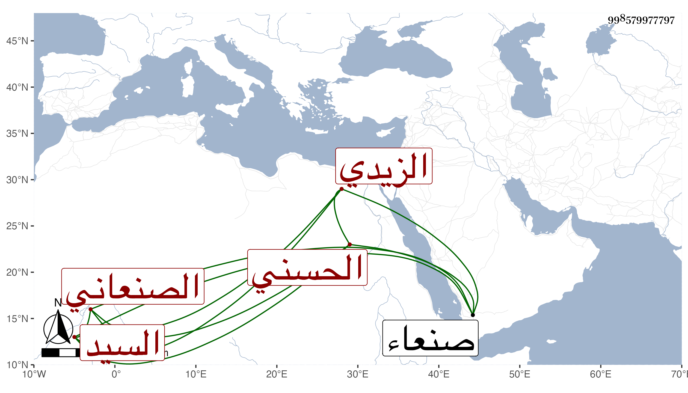

0902Sakhawi.DawLamic.ITO20230111-ara1.EIS1600.998579977797
Biography ID: 998579977797
879
الهادي بن إبرهيم بن علي بن المرتضى بن الهادي السيد الجمال الحسني الصنعاني الزيدي أخو محمد . ذكره شيخنا في إنبائه فقال عني بالأدب ففاق فيه ومدح المنصور صاحب صنعاء . مات يوم عرفة سنة اثنتين وعشرين . وذكره ابن فهد في معجمه فقال أنه حدث سمع منه الفضلاء قال وله مؤلفات منها الطرازين المعلمين في فضائل الحرمين المحرمين والقصيدة البديعية في الكعبة اليمنية الثمنية أولها :
| سرى طيف ليلى فابتهجت به وجدا | وتوح قلبي من لطائفه مجدا |
